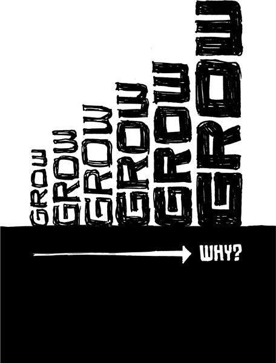

{% include JB/setup %}
{% raw %}
<div>

<h2 id="filepos32334" class="calibre19"><span class="calibre2"><a class="calibre13"></a><strong class="calibre14">Planning is guessing</strong></span></h2><div class="calibre4"></div>
<p class="calibre7">Unless you're a fortune-teller, long-term business planning is a fantasy. There are just too many factors that are out of your hands: market conditions, competitors, customers, the economy, etc. Writing a plan makes you feel in control of things you can't actually control.</p>
<p class="calibre17">Why don't we just call plans what they really are: guesses. Start referring to your business plans as business guesses, your financial plans as financial guesses, and your strategic plans as strategic guesses. Now you can stop worrying about them as much. They just aren't worth the stress.</p>
<p class="calibre17">When you turn guesses into plans, you enter a danger zone. Plans let the past drive the future. They put blinders on you. "This is where we're going because, well, that's where we said we were going." And that's the problem: Plans are inconsistent with improvisation.</p>
<p class="calibre17">And you have to be able to improvise. You have to be able to pick up opportunities that come along. Sometimes you need to say, "We're going in a new direction because that's what makes sense <em class="italic1">today</em>."</p>
<p class="calibre17">The timing of long-range plans is screwed up too. You have the most information when you're doing something, not <em class="italic1">before</em> you've done it. Yet when do you write a plan? Usually it's before you've even begun. That's the worst time to make a big decision.</p>
<p class="calibre17"><a class="calibre16"></a>Now this isn't to say you shouldn't think about the future or contemplate how you might attack upcoming obstacles. That's a worthwhile exercise. Just don't feel you need to write it down or obsess about it. If you write a big plan, you'll most likely never look at it anyway. Plans more than a few pages long just wind up as fossils in your file cabinet.</p>
<p class="calibre17">Give up on the guesswork. Decide what you're going to do this week, not this year. Figure out the next most important thing and do that. Make decisions right before you do something, not far in advance.</p>
<p class="calibre17">It's OK to wing it. Just get on the plane and go. You can pick up a nicer shirt, shaving cream, and a toothbrush once you get there.</p>
<p class="calibre17">Working without a plan may seem scary. But blindly following a plan that has no relationship with reality is even scarier.</p>
<p class="calibre3"><a class="calibre16"></a></p><div class="calibre4"></div>
</div>

{% endraw %}

